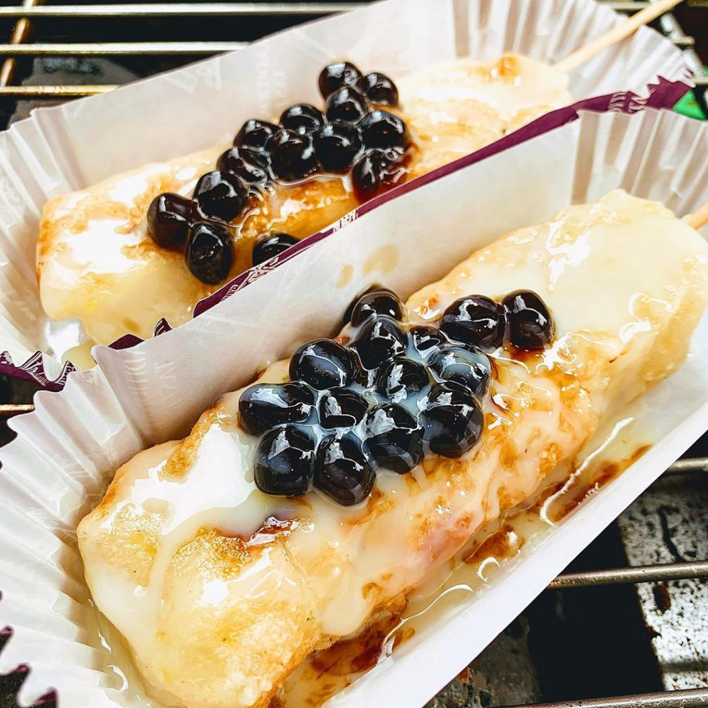
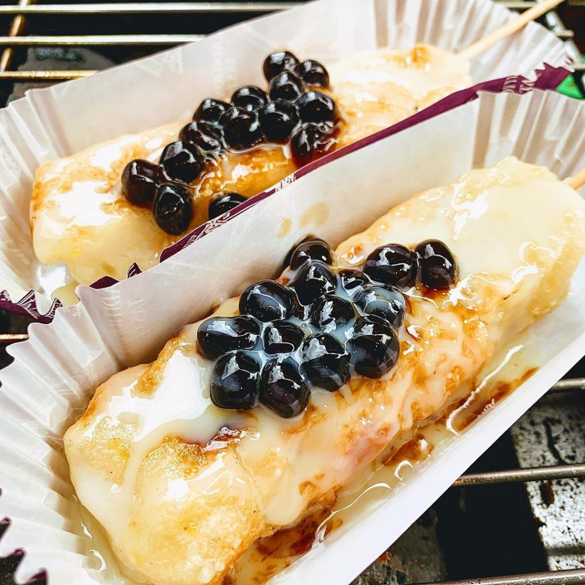

水芙蓉現烤小米麻糬
烏來現烤小米麻糬的創始店，水芙蓉也是眾人烏來老街必吃清單之一。
據說麻糬、香腸、魚板 (假日限定)，Q軟誘人的麻糬光看就垂涎三尺都超好吃的 !

地址：新北市烏來區烏來街10號 (地圖)
營業時間：09:00-17:00 (平日)；08:30-20:00 (六日)；周二、四公休
烏來現烤小米麻糬的創始店，水芙蓉也是眾人烏來老街必吃清單之一。
據說麻糬、香腸、魚板 (假日限定)，Q軟誘人的麻糬光看就垂涎三尺都超好吃的 !

地址：新北市烏來區烏來街10號 (地圖)
營業時間：09:00-17:00 (平日)；08:30-20:00 (六日)；周二、四公休